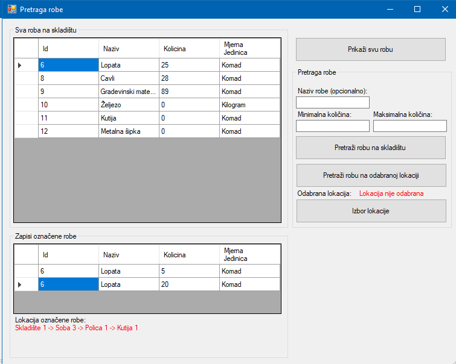

Prozor "Pretraga robe" služi za provjeru stanja robe na skladištu i pronalaženje lokacije određene robe. S lijeve strane je prikazana sva roba na skladištu. Odabrana roba u donjem prozoru pokazuje pojedinačne količine robe na različitim lokacijama. Pretraživanje je moguće prema određenim parametrima, kao što su prema nazivu robe, minimalnoj ili maksimalnoj količini robe na skladištu, te pretraživanje robe na odabranoj lokaciji.
Tipka "Pretraži robu na skladištu" pretražuje robu po parametrima kroz cijelo skladište, a tipka "Pretraži robu na odabranoj lokaciji" filtrira robu prema izabranoj lokaciji i parametrima.
